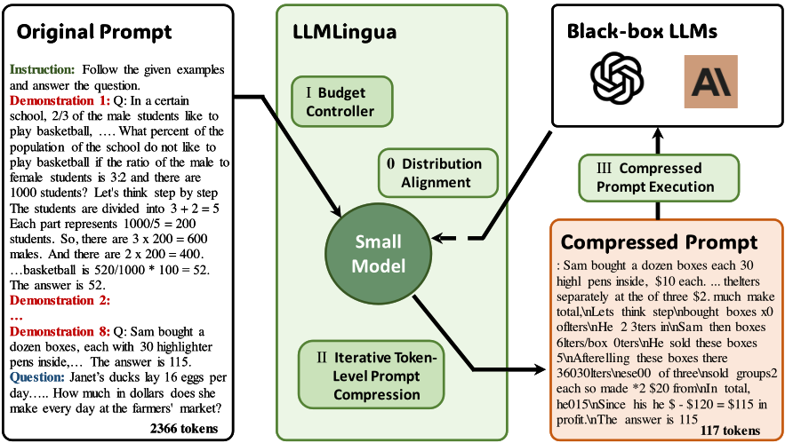
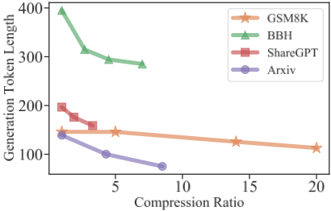
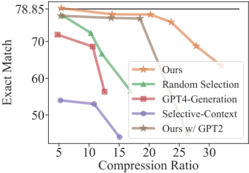
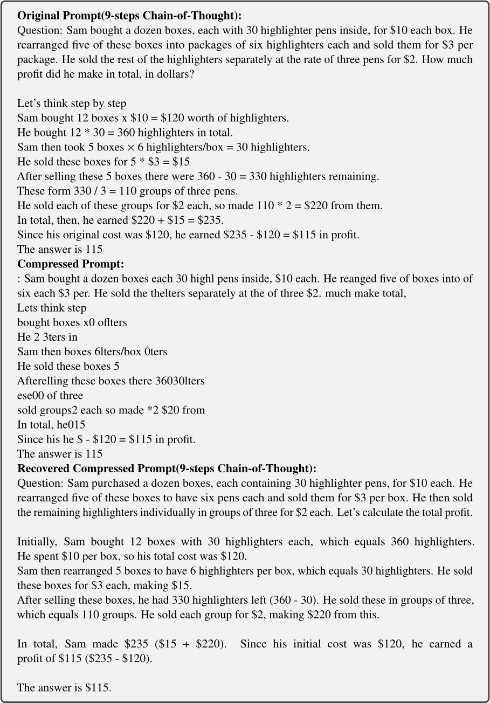
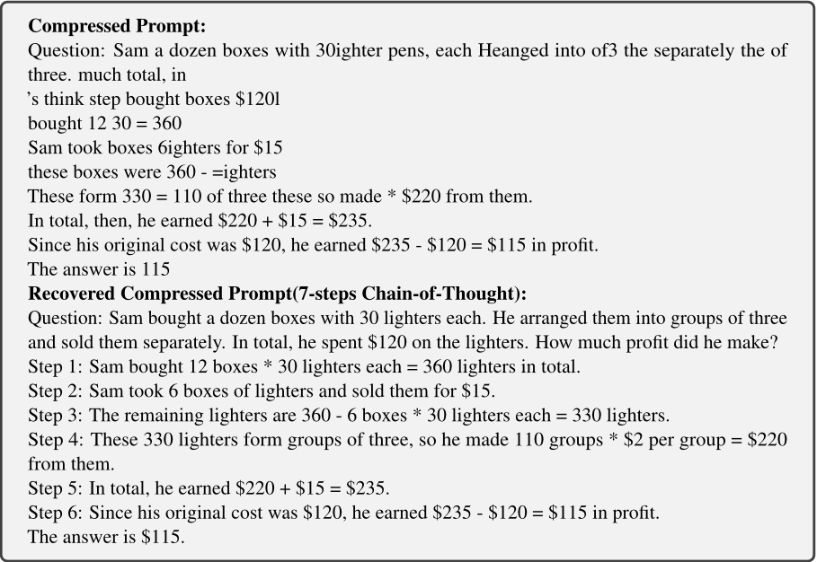
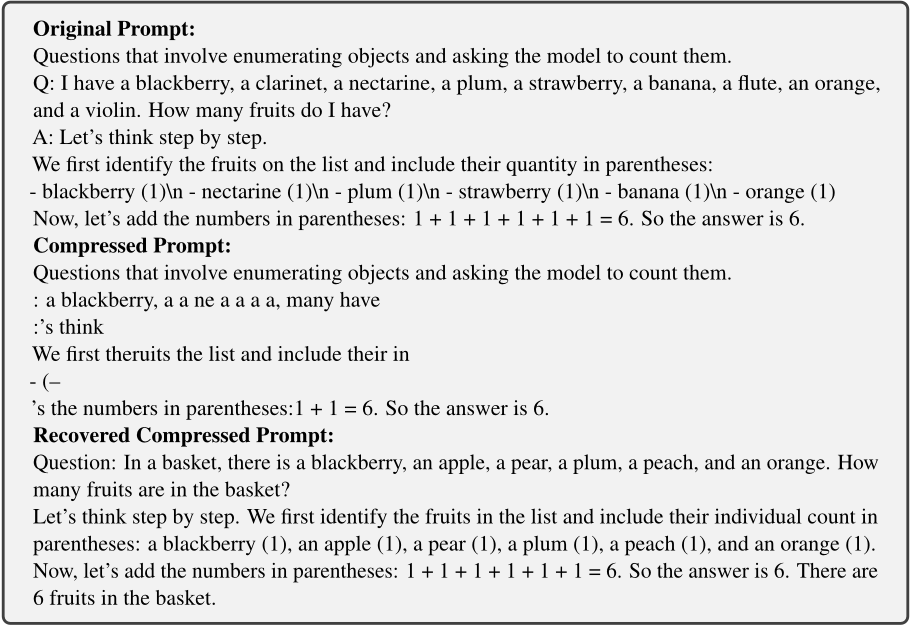
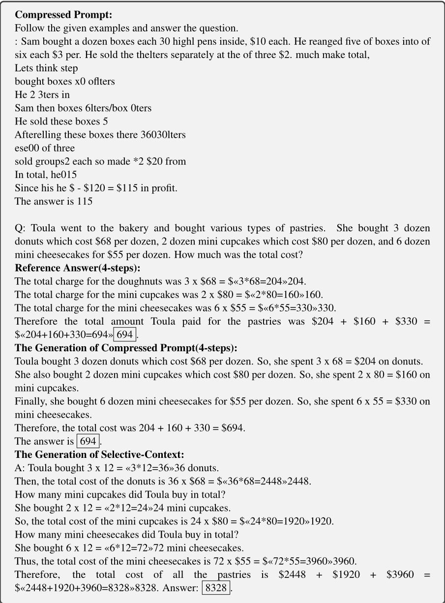

LLMLingua：面向大语言模型加速推理的提示压缩
随着 CoT、in-context learning 与检索文档/历史对话使 prompt 越来越长（可达数万 token），推理成本与延迟成为通过 API 使用 LLM 的主要负担，而量化等改模型参数的手段对黑盒 API 不可行。论文提出 LLMLingua，一种由粗到细的 prompt 压缩方法：Budget Controller 为 instruction/demonstrations/question 分配不同压缩率并做 demonstration 级粗压缩，迭代 token 级压缩（ITPC）建模被压缩内容间的条件依赖，再用 instruction tuning 对齐小模型与目标 LLM 的分布。在 GSM8K、BBH、ShareGPT、Arxiv-March23 四个数据集上取得 SOTA，最高 20x 压缩仅约 1.5 分性能损失，端到端加速 1.7x-5.7x。对团队而言，这是一个无需训练目标模型、可直接落地于黑盒 API 的上下文压缩与成本优化工具，尤其契合 RAG、知识库问答与长对话场景。
CoT、in-context learning、检索相关文档或历史对话等技术使喂给 LLM 的 prompt 日益冗长，推高推理成本与延迟；而通过量化、压缩等修改模型参数的加速方式对仅能通过 API 访问的 LLM 不可行。论文要解决的问题是：在不通过目标 LLM 做任何梯度流动的前提下，把长 prompt 压缩成短 prompt，同时尽可能保留 LLM 理解与推理所需的关键信息。已有方法 Selective-Context 忽略了被压缩内容之间的相互依赖，也忽略了压缩用小模型与目标 LLM 之间的分布对应关系。
提出 coarse-to-fine 的 prompt 压缩框架 LLMLingua，利用小型语言模型（GPT-2 或 LLaMA 系，如 Alpaca-7B）的困惑度（PPL）衡量 token 信息量（PPL 越高越关键），包含三个模块：(1) Budget Controller：为 instruction、demonstrations、question 动态分配不同压缩率（instruction/question 保留更多预算），高压缩率下先做 demonstration 级粗粒度筛选以保持语义完整性；(2) Iterative Token-level Prompt Compression（ITPC）：将 prompt 分段、把前一段压缩结果拼接进后一段以迭代估计条件概率，缓解 token 独立性假设，保留低频关键词等关键信息；(3) Distribution Alignment：用目标 LLM 生成的数据（Alpaca 数据集）对小型模型做 instruction tuning，缩小小模型与黑盒 LLM 的分布差距。目标 LLM 为 GPT-3.5-Turbo-0301 与 Claude-v1.3。
最高 20x 压缩仅约 1.5 分性能损失；GSM8K 上 14x 与 20x 压缩时 EM 仅分别下降 1.44 与 1.52
GSM8K 1-shot 下 5x 压缩甚至略优于 full-shot；20x 压缩 prompt 比 8-shot 3-step CoT 高 2.43 EM
BBH 上 5x 与 7x 压缩时 EM 分别下降 8.5 与 13.2 分
ShareGPT 与 Arxiv-March23 上分别实现 9x 与 3.3x 加速且保持高 BERTScore F1
GSM8K 上 20x 压缩比强基线 Selective-Context 高 33.10 EM 分
相对 zero-shot，最大压缩率下仍有 51.55 与 24.53 的性能提升
Claude-v1.3 上 5x 与 14x 压缩分别比原始 prompt 提升 0.8 与 1.7 EM
V100 上端到端加速 1.7x-5.7x；5x 压缩率下约节省 4x 计算资源
按 GPT-3.5-Turbo 定价，GSM8K、BBH、ShareGPT、Arxiv 四个数据集分别节省 $4.7、$8.0、$0.4、$0.8
消融实验中分布对齐在 GSM8K 上额外带来 0.56 EM 提升；GPT2-Alpaca 比 Alpaca-7B 在不同压缩率下低 2.06、0.99、1.06 EM
相比最接近的 Selective-Context（仅用短语级 self-information 独立删除低信息内容），LLMLingua 的区别在于：(1) 首次针对 prompt 结构（instruction/demonstrations/question）做差异化预算分配，并做 demonstration 级粗压缩以在高压缩率下保持语义完整性；(2) ITPC 迭代算法建模被压缩 token 间的条件依赖，缓解独立性假设；(3) 通过 instruction tuning 做小模型与目标 LLM 的分布对齐。作者称是首个在高效 LLM 领域评测推理与 ICL 能力的工作；方法对黑盒 API 模型适用，且与 prompt retrieval、prompt ordering 等提示工程手段正交，其困惑度筛选机制还可反哺 prompt retrieval 场景。
相关度级别：high
命中能力域：3.1 上下文工程与记忆 | 3.2 提示工程 | 3.5 评测与可靠使用
理由：论文直接命中 3.1 的核心技术'上下文窗口管理与压缩'：提供无需训练目标模型、适用于黑盒 API 的上下文压缩方案，可缓解团队 RAG/知识库问答与长对话场景中的上下文长度与成本压力。同时命中 3.2：方法围绕 instruction/demonstrations/question 的提示结构做差异化处理，并验证了压缩后 CoT 推理与 ICL 能力的保持。还命中 3.5 的'成本与效率优化'：论文给出了明确的 token 计算量、端到端延迟与 API 费用节省数据。团队构建代码生成/审查、文档、测试辅助、知识库问答等工具时，prompt 长度直接决定 API 成本与响应延迟，该方法可作为通用的前置压缩层。
建议动作：深入精读并做内部分享
arXiv:2310.05736v2 [cs.CL] 2023年12月6日
LLMLingua：压缩提示以加速大语言模型推理
Huiqiang Jiang, Qianhui Wu, Chin-Yew Lin, Yuqing Yang, Lili Qiu
微软公司
{hjiang, qianhuiwu, cyl, yuqing.yang, liliqiu}@microsoft.com
大语言模型（Large Language Models, LLMs）凭借其惊人的能力已被应用于各类应用中。随着思维链（chain-of-thought, CoT）提示和上下文学习（in-context learning, ICL）等技术的进步，输入给 LLMs 的提示变得越来越长，甚至超过数万个 token。为了加速模型推理并降低成本，本文提出了 LLMLingua，这是一种由粗到细的提示压缩方法，其中包含一个预算控制器，用于在高压缩比下保持语义完整性；一个 token 级迭代压缩算法，用于更好地建模被压缩内容之间的相互依赖关系；以及一种基于指令微调的方法，用于实现语言模型之间的分布对齐。我们在来自不同场景的四个数据集（即 GSM8K、BBH、ShareGPT 和 Arxiv-March23）上进行了实验与分析；结果表明，所提出的方法取得了最先进的性能，并支持高达 20 倍的压缩而几乎不损失性能。1
ChatGPT 的广泛应用通过利用大语言模型（LLMs）强大的泛化与推理能力，改变了众多场景。在实际应用中，构建合适的提示（prompt）至关重要，通常涉及思维链（CoT）、上下文学习（in-context learning）以及检索相关文档或历史对话等技术（Wei et al., 2022; Chase, 2022）。虽然这些方法能够通过激活 LLMs 的领域特定知识来引出高效的生成结果，但它们通常需要更长的提示。因此，如何在 LLMs 庞大的计算需求与对更长提示的需求之间取得平衡，已成为一个亟待解决的问题。一些研究试图通过量化（Dettmers et al., 2022; Xiao et al., 2023）、压缩（Frantar and Alistarh, 2023）等方式修改 LLMs 的参数来加速模型推理。然而，当只能通过 API 访问 LLMs 时，这些方法可能并不适用。
1 我们的代码可在 https://aka.ms/LLMLingua 获取。
近来，一些试图在保留关键信息的同时缩短原始提示长度的方法相继出现。这些方法立足于这样一个概念：自然语言本身具有冗余性（Shannon, 1951），因而可以被压缩。Gilbert et al. (2023) 还指出，LLMs 能够从压缩后的文本描述中有效重建源代码，同时保持较高的功能准确性。因此，我们沿循这一研究路线，在不经过 LLMs 任何梯度流的情况下，将长提示压缩为更短的提示，以支持基于更广泛 LLMs 的应用。
从信息熵的角度来看，困惑度（PPL）较低的 token 对语言模型整体熵增益的贡献较小。换言之，移除困惑度较低的 token 对 LLM 理解上下文的影响相对较小。受此启发，Li (2023) 提出了 Selective-Context，该方法首先利用一个小型语言模型计算原始提示中每个词汇单元（如句子、短语或 token）的自信息，然后丢弃信息量较少的内容以实现提示压缩。然而，该方法不仅忽略了被压缩内容之间的相互依赖关系，还忽略了目标 LLM 与用于提示压缩的小型语言模型之间的对应关系。
本文提出 LLMLingua，一种由粗到细的提示压缩方法，以解决上述问题。具体而言，我们首先提出一个预算控制器，用于向原始提示中的各个组成部分（如指令、示例和问题）动态分配不同的压缩比，同时执行粗粒度的示例级压缩，以在高压缩比下保持语义完整性。我们进一步引入一种 token 级迭代算法，用于细粒度的提示压缩。与 Selective Context 相比，该算法通过考虑 token 之间的条件依赖关系，能够更好地保留提示中的关键信息。此外，我们指出了目标大语言模型（LLM）与用于提示压缩的小语言模型之间存在分布差异这一挑战，并进一步提出一种基于指令微调的方法来对齐两个语言模型的分布。
我们在来自不同领域的四个数据集上验证了所提方法的有效性，即用于推理和上下文学习（ICL）的 GSM8K 和 BBH、用于对话的 ShareGPT，以及用于摘要的 Arxiv-March23。结果表明，我们的方法全面取得了最先进的性能。此外，我们进行了大量实验与讨论，以分析我们的方法为何能取得更优的性能。据我们所知，我们是首个在高效 LLM 领域评估推理和 ICL 能力的工作。
高效大语言模型（LLM）在近来的研究界受到了广泛关注，尤其是随着 ChatGPT 的日益流行。这些方法大多旨在通过量化（Dettmers et al., 2022; Frantar et al., 2023; Xiao et al., 2023）、压缩（Frantar and Alistarh, 2023）、指令微调（instruct tuning）（Taori et al., 2023; Chiang et al., 2023; Xu et al., 2023）或增量微调（delta tuning）（Hu et al., 2022）等方式修改模型参数，从而降低推理和微调的成本。
一系列研究尝试从输入提示（prompt）的角度优化推理成本。基于对输入与生成结果之间存在大量相同文本片段的观察，Yang et al. (2023) 直接从提示中复制 token 进行解码，以加速 LLM 的推理过程。一些方法专注于压缩提示，具体而言，通过对 LLM 进行提示微调（prompt tuning）来学习特殊 token，以减少推理过程中需要处理的 token 数量（Mu et al., 2023; Ge et al., 2022; Wingate et al., 2022; Chevalier et al., 2023; Ge et al., 2023）。遗憾的是，这些方法通常针对特定任务定制，其中一些方法（Mu et al., 2023; Chevalier et al., 2023）甚至需要对整个语言模型进行微调，这严重限制了它们的应用场景。此外，还有一些研究（Chase, 2022; Zhang et al., 2023）尝试利用 LLM 对对话或数据进行摘要，从而形成记忆和知识。然而，这些方法需要多次调用 LLM，成本相当高。
一些方法通过选择示例（demonstrations）的子集来缩短提示长度。例如，Zhou et al. (2023) 提出了一种基于强化学习的算法，为每个问题分配特定数量的示例。其他一些方法则专注于 token 剪枝（Goyal et al., 2020; Kim and Cho, 2021; Kim et al., 2022; Rao et al., 2021; Modarressi et al., 2022）和 token 合并（Bolya et al., 2023）。然而，这些方法是针对 BERT、ViT 等较小的模型提出的。此外，它们依赖于对模型进行微调，或在推理过程中获取中间结果。
与本文最相似的工作是 SelectiveContext（Li, 2023），该方法通过使用一个小型语言模型计算自信息（self-information）来评估词汇单元的信息量，并丢弃信息量较低的内容以实现提示压缩。本文受 SelectiveContext 启发，进一步提出了一个由粗到细的框架来解决其局限性。
近来，一系列针对无监督分布外（Out-of-Distribution, OoD）检测的研究被提出。由于仅有分布内（in-distribution）文本可用于学习，这些方法要么对预训练语言模型进行微调（Arora et al., 2021），要么从头训练一个语言模型（Mai et al., 2022）。Wu et al. (2023) 分析了这些方法的特点，并利用多层次知识蒸馏来融合它们的优势，同时缓解其局限性。最后，将所得语言模型输出的困惑度（perplexity）作为判断样本是否为 OoD 的指标。
本文同样将困惑度视为衡量语言模型对样本预测好坏的一种度量。与分布外检测将高困惑度的样本视为预测不可靠的指示不同，我们认为困惑度更高的 token 在语言模型的推理过程中具有更大的影响力。
近来，许多观点将大语言模型和无监督学习解读为一种针对世界知识的压缩器（Sutskever, 2023; Delétang et al., 2023），其实现方式是借助算术编码（arithmetic coding）（Rissanen, 1976; Pasco, 1976）。我们的研究可以被视为一种尝试，即利用大语言模型所具有的类压缩特性，进一步压缩提示（prompt）中的信息。

在本节中，我们详细阐述所提出的由粗到细（coarse-to-fine）的提示压缩方法 LLMLingua。首先，我们引入一个预算控制器（budget controller），用于为提示中的各个组件动态分配不同的压缩率，同时执行粗粒度的、示例级别（demonstration-level）的压缩，以在高压缩率下保持语义完整性。接下来，我们描述所提出的迭代提示算法，该算法旨在在压缩的同时保留提示中的知识。最后，我们引入对齐（alignment）来解决小模型与黑盒大模型之间的分布差异。图 1 展示了该框架。
这里的预算控制器旨在为提示中的不同组件（如指令、示例和问题）分配不同的预算（即压缩率），分配粒度为句子级别或示例级别。有两点考虑：（i）一般而言，提示中的指令和问题会直接影响生成结果，因为它们应当包含生成后续答案所需的全部必要知识。相反，如果原始提示中包含多个示例，其中所传达的信息可能是冗余的。因此，需要一个量身定制的预算控制器来分配更多的预算（即
输入：一个小型语言模型 M 𝑠 ；原始提示 x = ( x ins , x dems , x que )。
5: for 𝑖 = 1 do 6: if 𝐿 D > 𝑘 · 𝜏 dems 𝐿 dems then 7: Break. 8: end if 9: Append x dem ( 𝑖 ) to D . 10: 𝑖 = 𝑖 + 1
更小的压缩率）给指令和问题，而为示例分配较少的预算。
（ii）当需要较高的压缩率时，Li (2023) 中所采用的词元级丢弃（token-level dropout）可能会使压缩后的提示变得过于琐碎，从而丢失原始提示中的关键信息。因此，应当改用句子级丢弃（sentence-level dropout），以保留一定程度的语言完整性。尤其是在存在多个冗余示例的情况下，我们甚至可以执行示例级别的控制来满足压缩要求。
算法 1 展示了预算控制器的整体流程。
我们首先根据目标整体压缩率 𝜏 以及预先定义的指令和问题的压缩率（即分别为 𝜏 ins 和 𝜏 que），计算示例（demonstrations）的压缩率 𝜏 dems。
示例级提示压缩。利用推导得到的示例压缩率 𝜏 dems，我们随后执行粗粒度的示例级提示压缩：我们构建 D，即从 x dems 中选出的一个示例子集。
具体而言，我们首先采用一个小型语言模型 M 𝑠（例如 GPT-2 或 LLaMA）来计算 x dems 中每个示例的困惑度。然后，我们按困惑度值降序选择示例，直到再向 D 中添加一个示例就会使 D 中的词元总数超过最大词元数 𝑘 · 𝜏 dems 𝐿 dems 为止，其中 𝑘 为粒度控制系数。
算法 2 迭代词元级提示压缩（Iterative Token-level Prompt Compression, ITPC）的伪代码。
输入：小型语言模型 M 𝑠；来自预算控制器的提示 x ′ = ( x ins , x D , x que )；目标压缩率 𝜏，调整后的压缩率 △ 𝜏 ins , que。
1: 设置已选词元集合 T = 𝜙
2: 获取分段集合 S。
3: for 𝑖 = 1, 2, . . . , 𝑚 do
4: 通过式 (5) 得到条件概率 𝑝 ( s 𝑖 )
5: 通过式 (6) 得到压缩阈值 𝛾 𝑖。
6: 通过式 (7) 将压缩后的词元追加到 T。
7: end for
8: 将 T 中的所有词元拼接为 x。
输出：压缩后的提示 x。
调整指令和问题的压缩率。在得到粗粒度压缩结果 D = { 𝑥 𝑖 } 𝐿 D 𝑖 = 1 后，我们将剩余预算分配给指令和问题：
其中 𝐿 D 表示 D 中的词元总数。
利用困惑度进行提示压缩会遇到其内在的局限性，即独立性假设，这与掩码语言模型（Mask Language Model）的缺陷类似 (Yang et al., 2019)，如下式所示：
其中 x ′ = ( x ins , x D , x que ) 为经过示例级压缩后的原始提示；x D 为 D 中所有示例的拼接；𝑥 为最终压缩后的提示；𝑥 <𝑖 和 𝑥 <𝑖 表示第 𝑖 个词元 𝑥 𝑖 之前被保留和被压缩的词元；𝐿 ′ 和 𝐿 分别表示 x ′ 和 x 中所有词元的数量。
在此，我们提出一种迭代词元级提示压缩（Iterative Token-level Prompt Compression, ITPC）算法，以缓解由条件独立性假设引入的不准确性。算法 2 给出了相应的伪代码。
具体而言，我们首先将目标提示 x ′ 划分为若干个段 S = { s 1 , s 2 , ..., s 𝑚 }。然后，我们使用较小的模型 M 𝑠 来获取所有段的困惑度分布。由每一段得到的压缩后提示会被拼接到后续段中，从而能够更准确地估计条件概率。相应的概率估计函数可以表示为：
其中 𝑠 𝑗,𝑖 表示第 𝑗 个段中的第 𝑖 个词元，𝐿 𝑠, 𝑗 和 𝐿 𝑠, 𝑗 分别表示第 𝑗 个原始段和压缩段的词元长度。
在得到每个段的条件概率 𝑝 ( s 𝑗 ) 后，基于 PPL 分布以及相应的压缩率 𝜏 s 𝑗 ，动态地计算出 s 𝑗 所对应的压缩率阈值 𝛾 𝑗 ，其中
最后，每个 s 𝑗 中 PPL 大于 𝛾 𝑗 的词元将被保留在压缩后的提示中。
为了缩小大语言模型（LLM）与用于提示压缩的小语言模型二者分布之间的差距，我们在此通过指令微调（instruction tuning）来对齐这两个分布。
具体而言，我们从预训练的小语言模型 M 𝑠 出发，利用 LLM 生成的数据对 M 𝑠 进行指令微调。M 𝑠 的优化可以表示为：
其中，𝜃 M 𝑠 表示 M 𝑠 的参数，( x 𝑖 , y LLM 𝑖 ) 表示指令 x 𝑖 与 LLM 生成的文本 y LLM 𝑖 组成的数据对，𝑁 表示用于指令微调的全部样本数量。
数据集 为了全面评估压缩后的提示在保留大语言模型（LLM）能力方面的有效性，我们在四个数据集上评估了其性能。对于推理和上下文学习（in-context learning, ICL）任务，我们使用 GSM8K (Cobbe et al., 2021) 和 BBH (Suzgun et al., 2022)。在上下文理解方面，我们使用 ShareGPT (sha, 2023) 进行对话任务，使用 Arxiv-March23 (Li, 2023) 进行摘要任务。值得注意的是，本文所使用的小语言模型和目标 LLM 均未接触过任何评估数据集，尤其是最后两个数据集是今年新收集的。关于这些数据集的使用方式，我们遵循了先前工作 (Fu et al., 2023a; Li, 2023) 的实验设置。详细信息请参见附录 A.1。
评估 遵循 Cobbe et al. (2021)、Fu et al. (2023a) 和 Li (2023) 的做法，我们采用精确匹配（Exact Match）作为 GSM8K 和 BBH 的评估指标。我们使用 BLEU (Papineni et al., 2002)、ROUGE (Lin, 2004) 和 BERTScore (Zhang et al., 2020) 作为 ShareGPT 和 Arxiv-March23 的评估指标。
实现细节 在本文中，我们采用 GPT-3.5-Turbo-0301 和 Claude-v1.3 作为目标 LLM，二者可通过 OpenAI 2 和 Claude API 3 访问。为了提高 LLM 输出的稳定性，我们在所有实验中均采用温度为 0 的贪心解码（greedy decoding）。Alpaca 数据集 (Taori et al., 2023) 仅用于将小语言模型与黑盒 LLM 进行对齐，并未在评估过程中使用。在我们的实验中，我们使用 Alpaca-7B 4 或 GPT2-Alpaca 作为用于压缩的小型预训练语言模型 M 𝑠。我们基于 PyTorch 1.12.0 5 和 Huggingface 的 Transformers 6 实现了我们的方法。我们将粒度控制系数 𝑘 设置为 2。对于指令和问题，我们分别使用预定义的压缩率 𝜏 ins = 0.85 和 𝜏 que = 0.9。迭代 token 级压缩中使用的段大小设置为 100。
2 https://platform.openai.com/
3 https://anthropic.com/
4 https://github.com/tatsu-lab/stanford_alpaca
5 https://pytorch.org/
6 https://github.com/huggingface/transformers
| Methods.Methods | ShareGPT.BLEU | ShareGPT.Rouge1 | ShareGPT.Rouge2 | ShareGPT.RougeL | ShareGPT.BS F1 | ShareGPT.Tokens | ShareGPT.1 / 𝜏 | Arxiv-March23.BLEU | Arxiv-March23.Rouge1 | Arxiv-March23.Rouge2 | Arxiv-March23.RougeL | Arxiv-March23.BS F1 | Arxiv-March23.Tokens | Arxiv-March23.1 / 𝜏 |
|---|---|---|---|---|---|---|---|---|---|---|---|---|---|---|
| Constraint I | 2x constraint | 2x constraint | 2x constraint | 2x constraint | 2x constraint | 2x constraint | 2x constraint | 350 tokens constraint | 350 tokens constraint | 350 tokens constraint | 350 tokens constraint | 350 tokens constraint | 350 tokens constraint | 350 tokens constraint |
| Sentence Selection | 28.59 | 46.11 | 31.07 | 37.94 | 88.64 | 388 | 1.5x | 22.77 | 50.1 | 25.93 | 33.63 | 88.21 | 379 | 4x |
| Selective-Context | 25.42 | 46.47 | 29.09 | 36.99 | 88.92 | 307 | 1.9x | 21.41 | 51.3 | 27.94 | 36.73 | 89.60 | 356 | 4x |
| Ours | 27.36 | 48.87 | 30.32 | 38.55 | 89.52 | 304 | 1.9x | 23.15 | 54.21 | 32.66 | 42.74 | 90.33 | 345 | 4x |
| Constraint II | 3x constraint | 3x constraint | 3x constraint | 3x constraint | 3x constraint | 3x constraint | 3x constraint | 175 tokens constraint | 175 tokens constraint | 175 tokens constraint | 175 tokens constraint | 175 tokens constraint | 175 tokens constraint | 175 tokens constraint |
| Sentence Selection | 18.94 | 35.17 | 18.96 | 26.75 | 85.63 | 255 | 2.3x | 12.41 | 38.91 | 14.25 | 26.72 | 87.09 | 229 | 7x |
| Selective-Context | 15.79 | 38.42 | 20.55 | 28.89 | 87.12 | 180 | 3.3x | 12.23 | 42.47 | 19.48 | 29.47 | 88.16 | 185 | 8x |
| Ours | 19.55 | 40.81 | 22.68 | 30.98 | 87.70 | 177 | 3.3x | 13.45 | 44.36 | 24.86 | 34.94 | 89.03 | 176 | 9x |
| Methods.Methods | ShareGPT.BLEU | ShareGPT.Rouge1 | ShareGPT.Rouge2 | ShareGPT.RougeL | ShareGPT.BS F1 | ShareGPT.Tokens | ShareGPT.1 / 𝜏 | Arxiv-March23.BLEU | Arxiv-March23.Rouge1 | Arxiv-March23.Rouge2 | Arxiv-March23.RougeL | Arxiv-March23.BS F1 | Arxiv-March23.Tokens | Arxiv-March23.1 / 𝜏 |
| Methods. | GSM8K.EM | GSM8K.Tokens | GSM8K.1 / 𝜏 | BBH.EM | BBH.Tokens | BBH.1 / 𝜏 |
|---|---|---|---|---|---|---|
| Full-shot | 78.85 | 2,366 | - | 70.07 | 774 | - |
| 1-shot constraint | ||||||
| 1-shot | 77.10 | 422 | 6x | 69.60 | 284 | 3x |
| Selective-Context | 53.98 | 452 | 5x | 54.27 | 276 | 3x |
| GPT4 Generation | 71.87 | 496 | 5x | 27.13 | 260 | 3x |
| Ours | 79.08 | 446 | 5x | 70.11 | 288 | 3x |
| half-shot constraint | ||||||
| Sentence Selection | 72.33 | 230 | 10x | 39.56 | 175 | 4x |
| Selective-Context | 52.99 | 218 | 11x | 54.02 | 155 | 5x |
| GPT4 Generation | 68.61 | 223 | 11x | 27.09 | 161 | 5x |
| Ours | 77.41 | 171 | 14x | 61.60 | 171 | 5x |
| quarter-shot constraint | ||||||
| Sentence Selection | 66.67 | 195 | 12x | 46.00 | 109 | 7x |
| Selective-Context | 44.20 | 157 | 15x | 47.37 | 108 | 7x |
| GPT4 Generation | 56.33 | 188 | 20x | 26.81 | 101 | 8x |
| Ours | 77.33 | 117 | 20x | 56.85 | 110 | 7x |
| zero-shot | 48.75 † | 11 | 215x | 32.32 | 16 | 48x |
| Simple Prompt | 74.9 | 691 | 3x | - | - | - |
| Methods. | GSM8K.EM | GSM8K.Tokens | GSM8K.1 / 𝜏 | BBH.EM | BBH.Tokens | BBH.1 / 𝜏 |
基线 我们考虑以下基线方法：
表 1 和表 2 报告了我们的方法与各基线方法在 GSM8K、BBH、ShareGPT 和 Arxiv-March23 上的结果。可以看出，在几乎所有实验中，我们提出的方法都以较大幅度持续优于先前的方法。
具体而言，在与推理和上下文学习（in-context learning）相关的基准测试（benchmark）GSM8K 和 BBH 上，我们的方法在 1-shot 约束下甚至取得了略高于全量（full-shot）方法的结果，同时还分别实现了 5 倍和 3 倍的令人印象深刻的压缩比（1 / 𝜏）。这很好地表明，我们压缩后的提示有效地保留了原始提示中所包含的推理信息。随着压缩比的增大，即在半量（half-shot）和四分之一量（quarter-shot）约束下，性能会出现轻微下降。例如，在 GSM8K 上，尽管压缩比高达 14 倍和 20 倍，精确匹配（EM）分数仍会分别下降 1.44 和 1.52。在 BBH 上，我们的方法实现了 5 倍和 7 倍的压缩比，EM 分数分别下降 8.5 和 13.2 分。事实上，这一性能已经相当令人满意，因为它接近 PaLM-540B 在 half-shot 约束下取得的 62.0 分。我们的案例分析表明，BBH 上的这种性能下降主要源于具有挑战性的推理任务，例如 tracking_shuffled_objects_seven_objects。
此外，在 ShareGPT 和 Arxiv-March23 这两个上下文理解基准测试上，可以看到我们的方法在保持较高 BERTScore F1 的同时，实现了 9 倍和 3.3 倍的加速比，这表明我们的方法成功地保留了初始提示中的语义信息。
在此，我们分析了我们的方法与各基线方法在具有挑战性的推理与上下文学习（in-context learning, ICL）基准测试 GSM8K 和 BBH 上的性能表现。
我们注意到，在所有设置下，我们的方法相较于强基线 Selective-Context 均表现出显著的性能提升。我们推测，由于依赖短语级自信息（self-information），Selective-Context 在思维链（chain-of-thought, CoT）过程中容易丢失关键的推理信息。尤其是在 GSM8K 上，在压缩率为 20x 时，其性能比我们低 33.10 分。Sentence Selection 的欠佳表现表明，它可能面临类似的推理逻辑碎片化问题。令人惊讶的是，尽管 GPT-4 已展现出强大的文本生成能力，但其在提示压缩上欠佳的表现表明，生成的提示可能遗漏了原始提示中的关键细节，尤其是推理步骤。
除上述发现外，实验还表明，我们的方法能够保留提示对大语言模型（LLM）的 ICL 能力。与零样本（zero-shot）结果相比，即使在最大压缩率下，我们的方法仍取得了 51.55 和 24.53 的显著性能提升。值得注意的是，在 GSM8K 上，我们经 20x 压缩的提示比 8-shot 3-step CoT 高出 2.43 分，这进一步表明我们的方法能够有效保留推理信息。
为了验证我们方法中不同组件的贡献，我们引入了模型的五个变体进行消融研究：i) Ours w/o Iterative Token-level Compression，该方法在单次推理中执行词元（token）级压缩，而非迭代进行。ii) Ours w/o Budget Controller，该方法对所有组件直接采用相同压缩率的 ITPC。iii) Ours w/o Dynamic Compression Ratio，该方法对所有组件使用相同的压缩率。iv) Ours w/ Random Selection in Budget Controller，该方法为示例级提示压缩随机选择示例或句子。v) Ours w/o Distribution Alignment，该方法移除了我们方法中的分布对齐模块，直接使用预训练的 LLaMA-7B 作为小语言模型。vi) Ours w/ Remove Stop Words，该方法使用 NLTK 7 移除原始提示中的停用词。表 3 展示了结果。
将 Ours 与 w/o Iterative Token-level Prompt Compression 进行比较，我们观察到，当未考虑被压缩词元之间的条件依赖关系时，Exact Match 出现了显著下降。我们推测该变体可能丢失了提示中的关键信息，尤其是那些在给定提示中频繁出现的低频关键词。当将 Ours 与 w/o Dynamic Compression Ratio 以及 w/o Budget Controller 进行比较时，可以发现提示的不同组件表现出不同的敏感度。指令和问题需要更低的压缩率。为了平衡压缩率与语言完整性之间的关系，引入示例级或句子级的过滤器能够更好地保留足够的语言信息，即使在较高的压缩率下也是如此。Ours w/ Random Selection in Budget Controller 表明，基于困惑度来选择句子或示例，能够更好地为目标 LLM 识别出信息丰富的句子。分布对齐（Distribution Alignment）使小语言模型（LM）能够生成与目标 LLM 更为相似的分布，从而在 GSM8K 上取得了 0.56 的进一步提升。
7 https://www.nltk.org/
| EM | Tokens | 1 / 𝜏 | |
|---|---|---|---|
| Ours | 79.08 | 439 | 5x |
| - w/o Iterative Token-level Prompt Compression | 72.93 | 453 | 5x |
| - w/o Budget Controller | 73.62 | 486 | 5x |
| - w/o Dynamic Compression Ratio | 77.26 | 457 | 5x |
| - w/ Random Selection in Budget Controller | 72.78 | 477 | 5x |
| - w/o Distribution Alignment | 78.62 | 452 | 5x |
| - w/ Remove Stop Words | 76.27 | 1,882 | 1.3x |
| | EM | Tokens | 1 / 𝜏 |
不同目标 LLM 在此，我们以 Claude-v1.3 作为目标 LLM 来测试我们的方法，以证明其在 GPT 系列模型之外对不同黑盒 LLM 的泛化能力。受 API 成本限制，我们仅考虑 one-shot 约束和 half-shot 约束的场景。同样地，鉴于收集对齐数据存在困难，我们采用 Alpaca-7B 作为小语言模型。如表 4 所示，在压缩率分别为 5x 和 14x 时，我们的方法相比简单提示分别取得了 0.8 和 1.7 个 EM 点的提升。
| EM | Tokens | 1 / 𝜏 | |
|---|---|---|---|
| Ours in 1-shot constraint | 83.51 | 439 | 5x |
| Ours in half-shot constraint | 82.61 | 171 | 14x |
| Simple Prompt | 81.8 | 691 | 3x |
| | EM | Tokens | 1 / 𝜏 |
不同小语言模型 我们进一步使用不同的小语言模型来测试我们的方法：我们在 Alpaca 数据集上对 GPT2-small 进行微调，并将其用作系统中的小 LM。如表 5 所示，经 Alpaca 微调的 GPT2-small 所得结果弱于 Alpaca-7B 所得结果，在不同压缩率下性能分别下降 2.06、0.99 和 1.06 个 EM 点。这是由于小 LM 与目标 LLM 之间存在显著的分布差异。即使进行了分布对齐，仍然难以直接利用小语言模型的分布来估计目标 LLM。Li (2023) 中也报告了类似的观察结果。然而，得益于所提出的预算控制器（budget controller）和迭代式词元级（token-level）提示压缩算法，即使使用性能较弱的 GPT2-Small 作为小语言模型，我们的方法在推理等困难任务上仍取得了令人满意的结果。
| EM | Tokens | 1 / 𝜏 | |
|---|---|---|---|
| Ours with GPT2 in 1-shot constraint | 77.02 | 447 | 5x |
| Ours with GPT2 in half-shot constraint | 76.42 | 173 | 14x |
| Ours with GPT2 in quarter-shot constraint | 76.27 | 128 | 18x |
| | EM | Tokens | 1 / 𝜏 |
附录E展示了若干压缩后的提示及其后续生成的文本。显然，压缩后的提示仍然能够引导生成与原始提示相似的多步推理结果。相比之下，使用 Selective-Context 压缩的提示在推理逻辑上出现了错误。这凸显了我们的方法在保留关键语义信息的同时维持推理能力的有效性。
如图2所示，我们还分析了压缩率与相应生成文本长度之间的关系。可以观察到，随着压缩率的提高，目标大语言模型（LLM）生成的文本长度趋于减少，尽管在不同数据集上的减少程度各不相同。这表明提示压缩不仅在输入端节省了计算资源，还有助于在生成阶段节省计算开销。
LLMLingua 的开销 我们探索两个关键因素来研究 LLMLingua 的计算开销：参与计算的词元（token）数量以及端到端延迟。

我们系统的总体计算量是提示压缩与后续推理的计算量之和。这可以表述为：
其中，𝑐 small 和 𝑐 LLMs 分别表示小语言模型和 LLM 每个词元的计算负载。𝐿、𝑘𝐿 / 𝜏 和 𝐿 / 𝜏 分别是预算控制器、迭代式词元级提示压缩（ITPC）中待压缩词元的困惑度计算、以及 ITPC 中压缩结果的条件困惑度计算（使用 KV 缓存）所对应的词元推理次数。假设小语言模型与 LLM 具有相同的系统优化，例如使用 FasterTransformer 8 和量化技术，我们可以基于模型参数估计 𝑐 small 与 𝑐 LLMs 之间的比值：𝑐 small ≈ 7 / 175 𝑐 LLMs = 1 / 25 𝑐 LLMs。当 𝜏 = 5 时，我们有 𝑐 ≈ 0 . 264 · 𝐿𝑐 LLMs ≈ 1 / 4 · 𝐿𝑐 LLMs。也就是说，在使用更小的语言模型且提示压缩率为 5 倍时，我们可以实现近 4 倍的计算资源节省。
| 1 / 𝜏 | 1x | 2x | 5x | 10x |
|---|---|---|---|---|
| End-to-End w/o LLMLingua 8.6 | - | - | - | |
| End-to-End w/ LLMLingua | - | 4.9(1.7x) | 2.3(3.3x) | 1.3(5.7x) |
| LLMLingua | - | 0.8 | 0.3 | 0.2 |
| 1 / 𝜏 | 1x | 2x | 5x | 10x |
表6展示了不同系统在 V100-32G GPU 上压缩率从 1 倍到 10 倍时的端到端延迟。可以看出，LLMLingua 的计算开销相对较小，可以实现 1.7 倍到 5.7 倍的加速。
8 https://github.com/NVIDIA/FasterTransformer
Recovering the Compressed Prompt using LLMs Appendix D shows some examples restored from the compressed prompts by using GPT4 9 . It is evident that LLMs can effectively comprehend the semantic information in the compressed prompts, even if it might be challenging for humans. Additionally, we notice that how much information GPT-4 can recover depends on the compression ratio and the small language model we use. For instance, in Figure 4, the prompt compressed using Alpaca-7B is restored to its complete 9-step reasoning process, while in Figure 5, the prompt compressed with GPT2-Alpaca can only be restored to a 7-step reasoning process, with some calculation errors.
Compare with Generation-based Methods We do not develop our approach based on LLM generation primarily for three reasons: i) The content and length of the generated text are uncontrollable. Uncontrollable length requires more iterations to satisfy the constraint of the compression ratio. Uncontrollable content leads to low overlap between the generated text and the original prompt, particularly for complex prompts with multi-step inference, which may lose significant amounts of reasoning paths or even generate completely unrelated demonstrations. ii) The computational cost is high. Small language models struggle to handle such complex tasks, and using models like GPT-4 for compression would further increase computational overhead. Moreover, even powerful generation models like GPT-4 struggle to retain effective information from prompts as shown in Table 2. iii) The compressed prompts obtained from generation models are complete and continuous sentences, usually resulting in a lower compression ratio compared to our coarse-to-fine method.
Compare with Prompt Engineering methods Our method is orthogonal to Prompt Engineering methods, such as prompt retrieval and prompt ordering. Our work focuses on compressing welldesigned prompts, and it performs well on complex and fine-tuned prompts like GSM8K. Moreover, the perplexity-based demonstration filtering method used in our budget controller can also be applied to scenarios such as prompt retrieval. This demonstrates the compatibility and adaptability of our approach in various LLMs settings.
9 An intriguing observation is that GPT-3.5-Turbo struggles to reconstruct compressed prompts, while GPT-4 has demonstrated an ability to do so. This contrast in performance could suggest that recovering compressed prompts is an emergent ability that arises in more advanced language models.
我们提出了一种用于提示压缩的由粗到细算法，命名为 LLMLingua，该算法基于小型语言模型（LM）的困惑度（PPL），适用于黑盒大语言模型（LLM）。我们的方法由三个模块组成：Budget Controller、Iterative Token-level Compression 和 Alignment。我们在来自不同领域的 4 个数据集（即 GSM8K、BBH、ShareGPT 和 Arxiv-March23）上验证了该方法的有效性，结果表明我们的方法在所有数据集上均取得了最先进的性能，在实现高达 20 倍压缩的同时，性能仅下降 1.5 个点。此外，我们观察到 LLM 能够有效恢复被压缩的提示，且提示压缩有助于减少生成文本的长度。我们的方法具有重要的实际意义，因为它不仅能降低计算成本，还为在 LLM 中容纳更长的上下文提供了一种潜在解决方案。提示压缩方法有望通过压缩更长的提示来提升下游任务性能，并通过压缩 KV cache 来提高 LLM 的推理效率。
我们的方法也存在一些局限性。例如，当试图在 GSM8K 上实现过高的压缩比（如 25x-30x）时，我们可能会观察到明显的性能下降，如图 3 所示。

结果表明，随着压缩比的增大，尤其是在 25x-30x 附近，所有方法（包括我们的方法）都会出现大幅的性能下降。与其他方法相比，源自我们方法的这一性能下降显著地移向了更高的压缩比。我们将此归功于 Budget Controller 和 Iterative Token-level Prompt Compression 算法，它们使我们的方法即使在某些极端压缩比下也能保持原始提示的信息。不同提示的压缩比上限各不相同，取决于提示长度、任务类型以及所涉及句子数量等因素。
此外，小语言模型与黑盒 LLM 所使用的分词器（tokenizer）之间可能存在细微差异，这可能导致对提示 token 长度的低估。
GSM8K 一个广泛使用的数学推理数据集，包含 8,000 道题目，其中包括一个由 1,300 道题目组成的测试集，用于评估模型在算术推理以及用语言表述数学步骤方面的能力（Cobbe et al., 2021）。对于该数据集，我们采用复杂的多步思维链（CoT）提示（Fu et al., 2023b）10 作为原始提示。
BBH 一套语言与符号推理任务集合，由涵盖 23 个子集的 6,500 道题目组成，专门设计用于评估思维链提示。在我们的实验中，遵循 Suzgun et al. (2022) 所描述的方法，我们采用 3-shot CoT 提示 11 作为原始提示。
ShareGPT 一个来自 ShareGPT.com 平台（sha, 2023）的对话数据集，其中包含用户以不同语言、在各种场景（例如编程、闲聊、写作助手等）下分享的与 ChatGPT 的对话。我们使用 Li (2023) 提供的包含 575 个样本的数据集作为测试集。我们使用除最后一轮之外的所有对话作为提示，并使用 GPT-3.5-Turbo 生成结果作为参考。
Arxiv-March23 一个由 arXiv 预印本仓库中 2023 年 3 月创建的最新学术论文组成的数据集。我们使用 Li (2023) 收集的 500 条数据作为测试集。由于部分文章篇幅过长，我们取每篇文章的前五个章节，并将每个章节截断至 10,000 字符。然后，我们将这些章节拼接起来构成原始提示，并使用 GPT-3.5-Turbo 生成摘要作为参考。
10 https://github.com/FranxYao/chain-of-thought-hub
11 https://github.com/suzgunmirac/BIG-Bench-Hard
所有实验均在 Tesla V100（32GB）上进行。我们在 Alpaca 数据集 12 上训练 GPT2-Alpaca 模型，共训练八个 epoch，学习率为 1e-4，并使用 AdamW 优化器（Loshchilov and Hutter, 2019）。整个训练过程耗时约 150 分钟。我们使用 tiktoken 13 和 GPT-3.5-Turbo 模型来统计所有 token。
| GSM8K | BBH | ShareGPT | Arxiv | |
|---|---|---|---|---|
| Original | 5.2 | 12.8 | 0.7 | 1.3 |
| Ours | 0.5 | 4.8 | 0.3 | 0.2 |
| | GSM8K | BBH | ShareGPT | Arxiv |
表 7 展示了根据 GPT-3.5-Turbo 的定价，各数据集的估计推理成本。我们的方法在计算资源和资金支出方面展现了显著的节省，在 GSM8K、BBH、ShareGPT 和 Arxiv 数据集上分别观察到 $4.7、$8.0、$0.4 和 $0.8 的成本降低。
我们在 GPT-4 生成中使用的指令如下所示：
12 https://github.com/tatsu-lab/stanford_alpaca
13 https://github.com/openai/tiktoken
在本节中，我们展示了若干使用黑盒 LLM 重建压缩提示的示例。具体而言，我们选取了三个由不同的小语言模型在不同数据集上生成的、具有不同压缩率的压缩提示。这些提示连同引导指令一起，将作为 GPT-4 模型的输入。
我们展示了来自多个数据集的若干案例，涵盖压缩后的提示、由原始提示得到的结果、由压缩提示得到的结果，以及采用 selective-context 方法所取得的结果。




Evaluate a random boolean function expressed as a word problem.
Q: Question: Fidel tells the truth.
Jerry saysidel tells truth.
Vina says Jerry
Mill saysina
Raymond saysent
(3)ina says Jerry
() saysina
) saysent
We know from ( that Raymond truth.
So the answer is Yes.
Q: Question: Raymond tells the truth. Sal says Raymond lies. Alexis says Sal lies. Helene says Alexis lies. Elanor says Helene lies. Does Elanor tell the truth?
(1) Raymond 说真话。因此，我们知道 Raymond 说真话。
(2) Sal 说 Raymond 说谎。由于我们从 (1) 中知道 Raymond 说真话，如果 Sal 说 Raymond 说谎，那么 Sal 在说谎。
(3) Alexis 说 Sal 说谎。由于我们从 (2) 中知道 Sal 在说谎，如果 Alexis 说 Sal 说谎，那么 Alexis 说真话。
(4) Helene 说 Alexis 说谎。由于我们从 (3) 中知道 Alexis 说真话，如果 Helene 说 Alexis 说谎，那么 Helene 在说谎。
(5) Elanor 说 Helene 说谎。由于我们从 (4) 中知道 Helene 在说谎，如果 Elanor 说 Helene 说谎，那么 Elanor 说真话。
现在，问题问的是：Elanor 说真话吗？我们从 (5) 中知道 Elanor 说真话。所以答案是 𝑌𝑒𝑠 。
所以答案是 𝑌𝑒𝑠 。
现在让我们继续讨论第二个问题。
请提供 TOPAS 格式的辐射束谱示例，我将从中学习。
束流能谱由 12 个能级及其对应的权重组成。
dv:So/SARRPbeam/BeamEnergySpectrumValues：列出能谱中的能量值，各值之间以制表符分隔。
根据所提供的数据，我们得到以下能量值及对应的权重：能量(V)权重202.15E-0520.12.29E-0520.22.43E0520.32.580520.42.74052.52.9152.63.0 952.7.29052.8.49E-0520.93.71E05213.94E-0521.14.15E05如果您有任何问题，或希望我进一步协助处理这些数据，请告诉我。
现在我将给你一个包含 ElektaAC 能谱的表格，我希望你将其转换为 topas 格式：
请提供 Elekta LINAC 的能谱表格，我将为您将其转换为 AS 格式。
E (MeV) Elekta (6 MV)
0.25 0.173E-04(1.5%)\n .5 .100E03(0.5%)\n .75 .110E03(.5%)\n 1 0.952E-04(0.5%)\n 1.25 .827E04(.5\n .5 .721E04(.\n . .63E04(.\n 2 .55E04(.%)\n . .493E04(0.5%)\n 2.5 .437E04(.6\n 2.5 .386E04(.6\n 3 .34E4(.6\n . .30E4(.6\n . .27E4(.7\n 3.7 0.240E-04(.7\n 4 .21E04(.7\n . .18E(.8\n . .16E(.8\n .14E(.9\n 5 .121E04(.9\n 5.2 .101E4(1.0\n . .81E0(.1\n . .64E.2\n 6 .45E.4\n .0.300E-05(1.8\n 6.5 .15E0(.4\n .7 .73E0(.4\n 7 .29E0(.0\n . .88E0(.\n .18E-07(19.8%)\n 7.75 0.277E-08(50.0%)\n 8 0.159E-08(70.8%)
感谢您提供包含 Elekta LINAC 能谱的表格。以下是相同内容的 TOPAS 格式：
| s:...Type | "Discrete" | "Discrete" | "Discrete" | "Discrete" | "Discrete" | "Discrete" | "Discrete" | "Discrete" |
|---|---|---|---|---|---|---|---|---|
| dv:...Values | 0.25 | 0.5 | 0.75 | 1 | 1.25 | 1.5 | 1.75 | 2 |
| dv:...Values | 2.25 | 2.5 | 2.75 | 3 | 3.25 | 3.5 | 3.75 | 4 |
| dv:...Values | 4.25 | 4.5 | 4.75 | 5 | 5.25 | 5.5 | 5.75 | 6 |
| dv:...Values | 6.25 | 6.5 | 6.75 | 7 | 7.25 | 7.5 | 7.75 | 8 |
| uv:...Weights | 1.73e-05 | 0.0001 | 0.00011 | 9.52e-05 | 8.27e-05 | 7.21e-05 | 6.35e-05 | 5.57e-05 |
| uv:...Weights | 4.93e-05 | 4.37e-05 | 3.86e-05 | 3.45e-05 | 3.02e-05 | 2.7e-05 | 2.4e-05 | 2.1e-05 |
| uv:...Weights | 1.86e-05 | 1.64e-05 | 1.42e-05 | 1.21e-05 | 1.01e-05 | 8.17e-06 | 6.45e-06 | 4.55e-06 |
| uv:...Weights | 3e-06 | 1.56e-06 | 7.34e-07 | 2.94e-07 | 8.82e-08 | 1.88e-08 | 2.77e-09 | 1.59e-09 |
| s:...Type | "Discrete" | "Discrete" | "Discrete" | "Discrete" | "Discrete" | "Discrete" | "Discrete" | "Discrete" |
希望这对您有所帮助。如果您有任何问题或需要进一步的帮助，请随时告诉我。
感谢您提供 EletaAC 光谱的表格。以下是如何将其整理为 TOPAS 格式的方式：
| s:...Type | "Discrete" | "Discrete" | "Discrete" | "Discrete" | "Discrete" | "Discrete" | "Discrete" | "Discrete" |
|---|---|---|---|---|---|---|---|---|
| dv:...Values | 0.25 | 1.5 | 2 | 3.2 | 4 | 5 | 6 | 7 |
| dv:...Values | 7.25 | 7.5 | 7.75 | 8 | ||||
| uv:...Weights | 1.73e+06 | 0.1 | 1.1 | 0.95 | 0.82 | 0.63 | 0.55 | 0.4943 |
| uv:...Weights | 0.345 | 0.3 | 0.27 | 0.24 | 0.16 | 7.14e+51 | 0.64 | 6.45 |
| uv:...Weights | 0.3 | 0.15 | 0.73 | 2.94e-07 | 8.82e-08 | 1.88e-08 | 2.77e-09 | 1.59e-09 |
| s:...Type | "Discrete" | "Discrete" | "Discrete" | "Discrete" | "Discrete" | "Discrete" | "Discrete" | "Discrete" |
如果您有任何疑问，或需要针对此数据的进一步协助，请随时告知。
很抱歉，我看不到您所指的表格。请您提供该表格，以便我协助您将其转换为 TOPAS 格式。
具有结构的宇宙中的红移漂移 II：穿过 aian Nbody 模拟传播的光线
koksbang@cp3.sdk CP3-Orins,mark' Mmark
Theshiftift 是沿传播穿过 aulated 宇宙而计算的，该宇宙基于牛顿 Nbody 模拟代码 GGET2，并采用 ian 规范下的 perturbedmann-Lreer 度规。
It is that，meanshift
本文讨论了在一个模拟宇宙中沿光线计算红移漂移的问题，该模拟宇宙基于牛顿 N 体模拟代码 GADGET-2，并结合了牛顿规范下受扰动的弗里德曼-勒梅特-罗伯逊-沃尔克（Friedmann-Lemaitre-Robertson-Walker）度规。研究发现，在数值计算精度范围内，平均红移漂移等于平均红移的漂移，其原因在于红移漂移的两个主导分量之间存在高度抵消。该研究忽略了光学漂移的贡献，但据估计，这些效应至多为红移漂移信号的 10% 量级。研究还发现，在模拟设置中，来自发射体本动加速度的红移漂移贡献可以忽略不计，但预计在实际观测中这一贡献将会更大。
该文档讨论了在模拟宇宙中采用 Nbody 模拟代码 GGET2 和受扰动的 Lemaître-Lemaître 度规计算红移漂移。结果表明，平均漂移等价于平均值的漂移，其原因在于两个主导分量之间存在高度抵消。这一结果与基于表现出宇宙反作用的非均匀宇宙学模型的早期研究发现相矛盾。该文档还估计，光学漂移效应至多为红移漂移信号的 10%。
该文档讨论了红移漂移测量的使用，该方法最早于1962年被提出。该研究涉及分析由三位具有非径向视线的不同观测者所观测的非径向光线。LTB模型的现今密度轮廓显示在一幅图中，并采用四线性插值在快照之间进行插值。观测时间设为30年，红移漂移各分量的均值与涨落显示在另一幅图中。该研究未涉及本动加速度（peculiar acceleration）的影响。